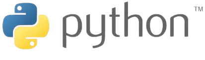
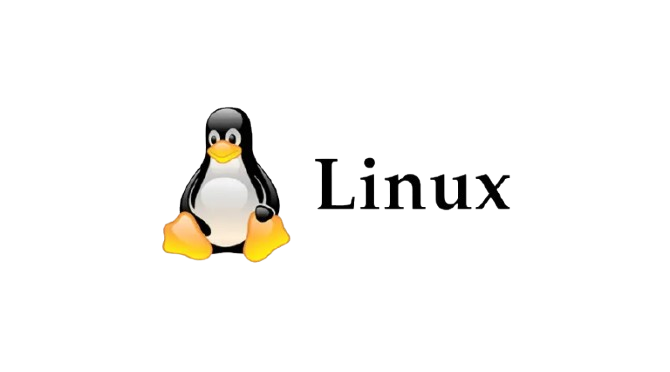
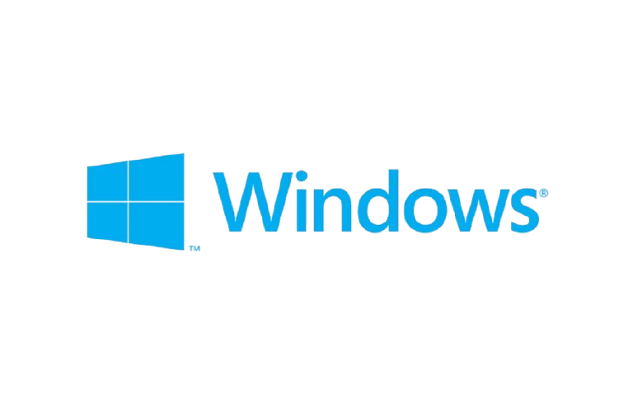

Sênior em Tecnologia da Informação
lucas.sobrinho.crn@gmail.comImplantei sistemas de chatbot inovadores, resultando em um aumento de 600% na eficiência do atendimento aos funcionários...
Gerenciei a infraestrutura de servidores corporativos, assegurando sua operacionalidade contínua...
Como aprendiz administrativo, coordenei as rotinas de RH, Almoxarifado, Cobrança e Gerência...
Aprimorei minhas habilidades em desenvolvimento web através de projetos pessoais hospedados no GitHub...
Atualmente estou no terceiro semestre. Fui capaz de desenvolver habilidades em programação web usando HTML, CSS, JavaScript e Python. Também aprendi SCRUM para melhorar a gestão de projetos e aprimorei meu conhecimento em segurança da informação para proteger dados. Estas experiências estão aprimorando minhas capacidades técnicas e de comunicação.
Adquiri conhecimento profundo em Python sem o uso de frameworks. Este curso me proporcionou uma base sólida na linguagem, preparando-me para aplicar este conhecimento em diversos contextos de programação.
Este curso foi capaz de me ajudar a automatizar rotinas e aprofundar minha compreensão da lógica de programação. Este domínio me possibilitou otimizar processos e aumentar a eficiência operacional de maneira significativa.
Completei um curso de Aprendizagem Profissional em Serviços de Supermercado, onde desenvolvi habilidades práticas em atendimento ao cliente, gestão de estoques e operações de caixa. Este curso ampliou minha capacidade de trabalhar em equipe e minha proatividade, preparando-me para desafios em ambientes de varejo dinâmicos.
Aprimorei minhas habilidades com o Pacote Office e em rotinas administrativas, melhorando significativamente minha organização e eficiência. Também desenvolvi minhas competências comunicativas e proatividade, essenciais para um desempenho eficaz e colaborativo.
Meu nome é Lucas e tenho 20 anos. Desde os 6 anos de idade, sou fascinado por computadores, sempre buscando entender e resolver problemas de sistema. Meu interesse por programação começou aos 15 anos, em 2021, quando comecei a aprender Python. Atualmente, dedico parte do meu tempo à estudar mais sobre o mundo da programação/Cyber Security e à leitura de livros sobre lógica, educação financeira e psicologia, buscando aprimorar não apenas minhas habilidades técnicas, mas também minhas competências interpessoais. Além disso, gosto de desenvolver projetos pessoais que me permitem melhorar continuamente minhas habilidades em desenvolvimento web, como o projeto integrador da faculdade 'Me Encontrando', que visa facilitar o acesso a recursos psicológicos por meio da tecnologia.